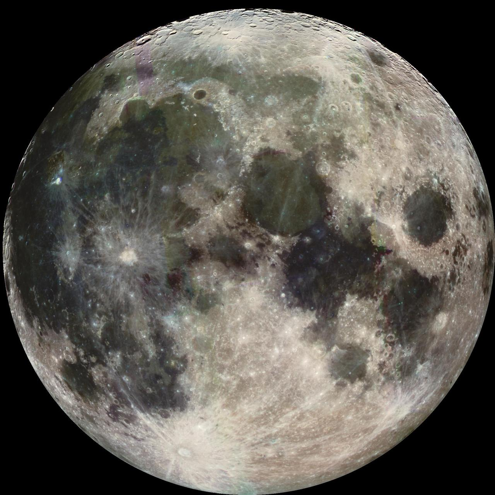

SOLE OGGI
Alba di oggi—
Tramonto di oggi—
Durata del giorno—
Calcolo degli orari per la data corrente e la città selezionata.

AD ASTRA · EFFEMERIDI MENSILI
Date, orari e posizioni dei principali fenomeni astronomici.
Le effemeridi raccolgono in una sola pagina i principali dati astronomici del mese: movimento apparente del Sole e della Luna, fasi lunari, visibilità dei pianeti e fenomeni di maggiore interesse. Scegli la città nei dati di riferimento per adattare gli orari e la visibilità al tuo luogo di osservazione.
Calcolo degli orari per la data corrente e la città selezionata.
Calcolo degli orari lunari di oggi.
Località: Roma
Coordinate: 41,9028° N · 12,4964° E
Fuso orario: Europe/Rome
Riferimento: orizzonte locale libero
Orari: ora civile, con ora legale quando prevista
Alcuni fenomeni e orari possono variare in funzione della posizione geografica.
Roma · ottobre 2026 · dati e calendario aggiornati.
Notte di riferimento: 15–16 ottobre 2026 · Roma. Finestre indicative al minuto, campionate ogni 10 minuti: pianeta almeno 10° sopra l’orizzonte e Sole almeno 6° sotto. (15) e (16) indicano il giorno; la posizione è riferita al 15 alle 22:00. Le condizioni cambiano durante il mese.
| Pianeta | Visibilità | Periodo osservativo | Costellazione / Posizione | Note |
|---|---|---|---|---|
| ☿Mercurio | Poco favorevole nella notte di riferimento | Nessuna finestra con altezza ≥ 10° e Sole ≤ −6° | Bilancia · sotto l’orizzonte alle 22:00 | Vicino al Sole: osservare solo dopo il tramonto o prima dell’alba, con il Sole sotto l’orizzonte. Magnitudine -0,0. |
| ♀Venere | Poco favorevole nella notte di riferimento | Nessuna finestra con altezza ≥ 10° e Sole ≤ −6° | Vergine · sotto l’orizzonte alle 22:00 | Molto luminoso; al telescopio mostra le fasi. Magnitudine -4,3. |
| ♂Marte | Osservabile nelle ore buie | 02:10–06:50 (16) | Cancro · sotto l’orizzonte alle 22:00 | Il colore rossastro aiuta a riconoscerlo; i dettagli richiedono un telescopio. Magnitudine 1,0. |
| ♃Giove | Osservabile nelle ore buie | 03:20–06:50 (16) | Leone · sotto l’orizzonte alle 22:00 | Un binocolo stabile può mostrare i satelliti maggiori; al telescopio le fasce nuvolose. Magnitudine -1,9. |
| ♄Saturno | Osservabile nelle ore buie | 19:10–05:20 (16) | Balena · sud-est, 40° di altezza alle 22:00 | Gli anelli si riconoscono al telescopio. Magnitudine 0,3. |
| ♅Urano | Osservabile nelle ore buie | 21:30–06:50 (16) | Toro · est, 16° di altezza alle 22:00 | Consigliati binocolo e carta di riferimento; il piccolo disco si distingue al telescopio. Magnitudine 5,6. |
| ♆Nettuno | Osservabile nelle ore buie | 19:10–04:40 (16) | Pesci · sud-est, 42° di altezza alle 22:00 | Serve un telescopio e una carta di riferimento; non è visibile a occhio nudo. Magnitudine 7,8. |
4 ottobre alle ore 14:12
Il pianeta si trova dalla parte opposta al Sole nel cielo: un periodo favorevole per osservarlo.
Fotografia di archivio. NASA/JPL/Space Science Institute

5 ottobre alle ore 08:01
I due astri appaiono vicini nel cielo. Cercali il 5 alle 05:00 verso est; la distanza apparente a quell’ora sarà diversa.
Fotografie separate dei due astri. NASA/JPL
NASA/JPL-Caltech/USGS
6 ottobre alle ore 12:21
I due astri appaiono vicini nel cielo. Cercali il 6 alle 05:00 verso est; la distanza apparente a quell’ora sarà diversa.
Fotografie separate dei due astri. NASA/JPL
NASA/JPL/Space Science Institute
10 ottobre alle ore 17:50
Periodo favorevole per il cielo profondo, nelle notti senza Luna.
Illuminazione calcolata su fotografia di archivio NASA/JPL; fase riferita all’istante indicato.
24 ottobre alle ore 15:05
I due astri appaiono vicini nel cielo. Cercali il 24 alle 22:00 verso sud-est; la distanza apparente a quell’ora sarà diversa.
Fotografie separate dei due astri. NASA/JPL
NASA/JPL/Space Science Institute
26 ottobre alle ore 05:12
La luce lunare rende meno visibili galassie e nebulose.
Illuminazione calcolata su fotografia di archivio NASA/JPL; fase riferita all’istante indicato.